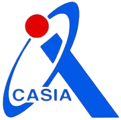
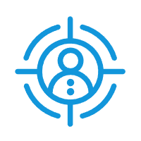
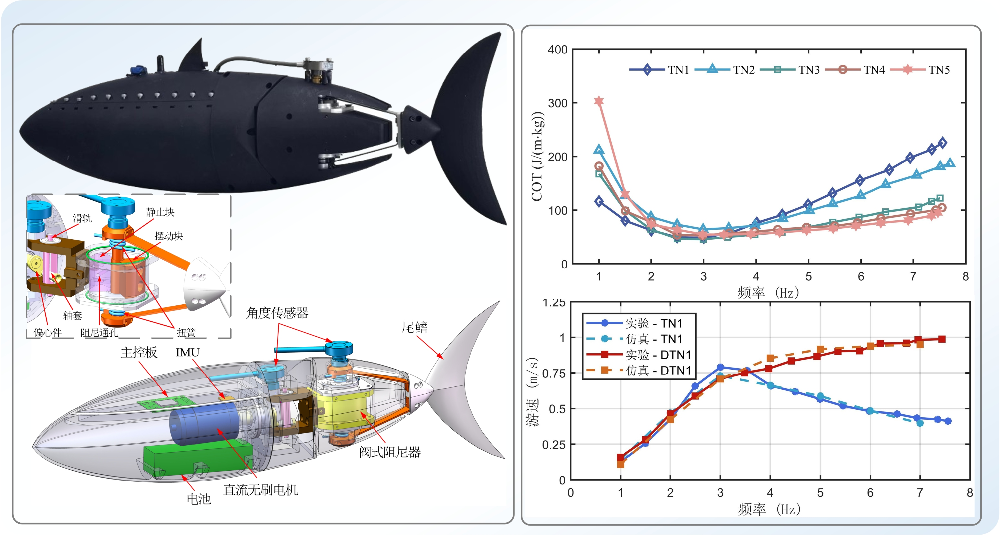
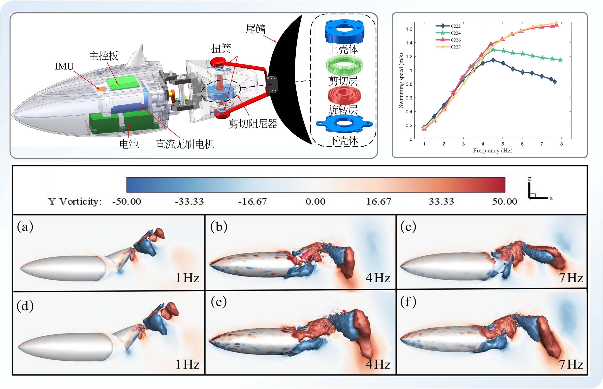

Introduction✨ ✨ ✨

Brief
The Underwater Robot Team of Institute of Automation, Chinese Academy of Sciences (IACAS) is led by
Min Tan
and Chao Zhou,
and focuses on the underwater robot field including the design,control and perception of the underwater robot, especially bionic robots(like robotic fish).
Our team has developed a variety of fish-like swimming robots, including robotic dolphins, rays, eels, etc.,
and achieved high-maneuverability motion control of fish-like swimming.
Our team has also achieved the rolling and continuous water-jumping motion of robot dolphins.
Scholar
-
Min Tan


-
Zhengxing Wu
- Haipeng Li
-
Sai Deng

-
Wenkai Chang
-
Jian Wang
-
Junhang Wei
-
Chao Zhou
- Xiangjiang Li
- Jun Zheng
-
Junfeng Fan
-
Peng Li
-
Zhuoliang Zhang
- ...
Research✨ ✨ ✨
Toward Propulsive Performance Evaluation of a Robotic Tuna Based on the Damping-Elastic Composite Mechanism
Motivated by the high maneuverability and low power consumption requirements, using elastic components in the joints of robotic fish can improve thrust production and efficiency. However, the propulsive performance of the elastic mechanism cannot be satisfied over a wide range of frequencies. First, this article develops a robotic tuna with a novel passive flexible joint structure, which combines with the compliance features of the elastic component and the damper, so as to maintain an ideal amplitude and phase difference of the caudal fin, resulting in better swimming performance over multifrequency ranges. Moreover, a dynamic model for the robotic tuna is established based on Kane method. Thrust characteristic calculation and computational fluid dynamics method are applied to analyze the propulsion and vorticity characteristics. Simulated results show that the composite mechanism generates higher thrust production and stronger vortex structures. Finally, simulations and experiments validate the effectiveness of the proposed method. Experimental results demonstrate that the robotic tuna can achieve a maximum speed of 1.21 m/s (equivalent to 2.24 body lengths per second) and minimum cost of transport of 45.67 J/(m ⋅ kg). The research has published in IEEE/ASME Transactions on Mechatronics (SCI, Q1, IF: 6.4), DOI: 10.1109/TMECH.2023.3315681。

CMBUV: A Composite-Mechanism Bioinspired Underwater Vehicle Integrated With Elasticity and Shear Damping Possesses High-Performance Capability
Benefiting from the potential advantages of low noise, high efficiency and little disturbance, bionic propulsion has attracted wide attentions. Compared with the rigid structure, the performance of the elastic propulsion structure such as flexible caudal fin and passive compliant joint has been improved, yet the effective frequency range is limited due to the single mechanism. The optimal propulsion can only be produced in a certain frequency range. In this article, a biological passive peduncle joint integrated with the composite mechanism of elasticity and shear damping is proposed, solving the problem of the narrow frequency range of effective propulsive capacity. Through the optimal regulation of the elastic function at a certain frequency range and characterization of the damping function which increases with frequency, the response features of the passive joint are optimized over a wide range of frequencies, thereby improving the propulsive performance of the composite-mechanism bioinspired underwater vehicle (CMBUV). A dynamic model is built and the deformation analysis of the compliant caudal fin is carried out. The propulsive efficiency is characterized, and the results indicate that the compliant caudal fin modulates the power transmission for enhancing thrust production. Extensive simulations and experiments reveal that the CMBUV achieves both high swimming speed with 4.42 body length per second and low cost of transport with 90.33 J/kg/m. Bioinspired propulsion from this study takes advantage of undulating propulsion of natural fish, offering valuable insights into performing marine tasks in ocean environments. The research has published in IEEE Transactions on Intelligent Vehicles (SCI, Q1, IF: 14), DOI: 10.1109/TIV.2023.3286820。

Cooperation✨ ✨ ✨
Here is coming.